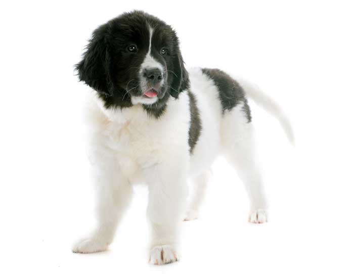
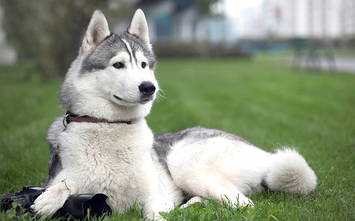
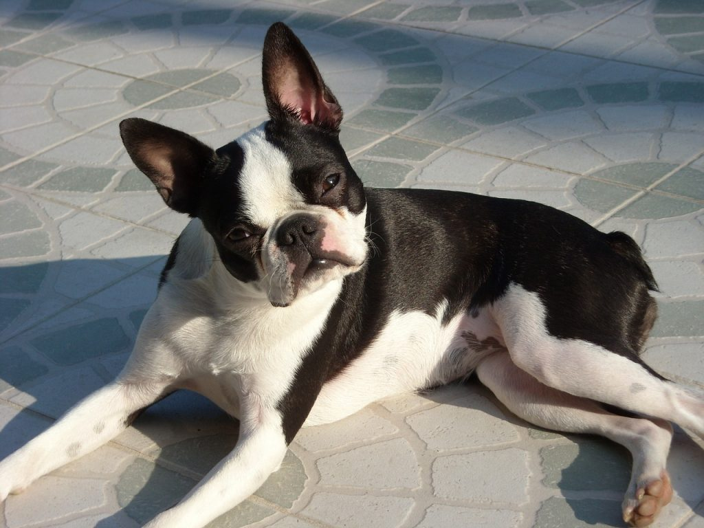
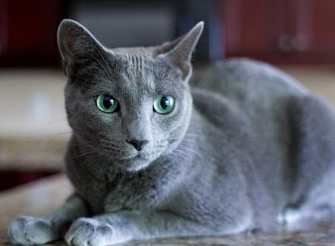
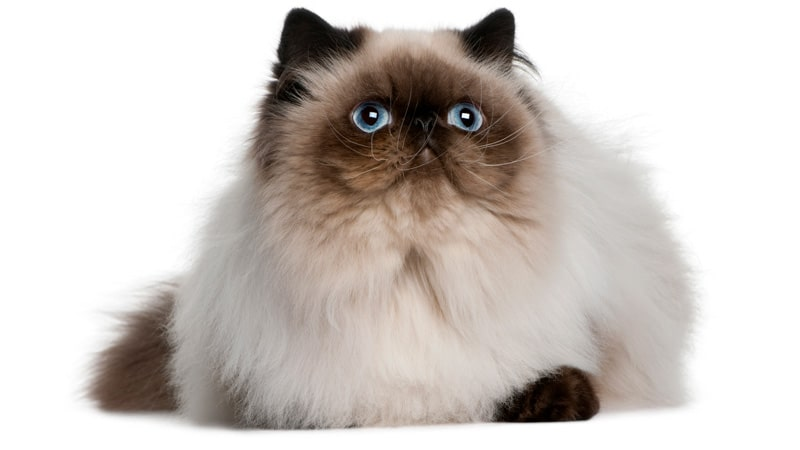
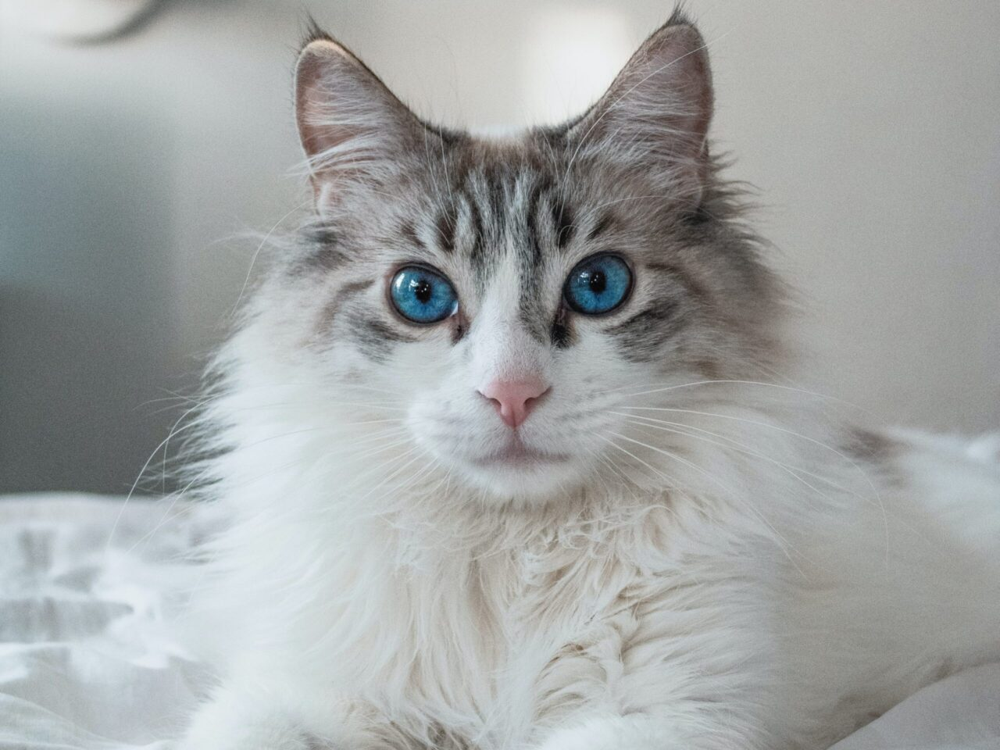
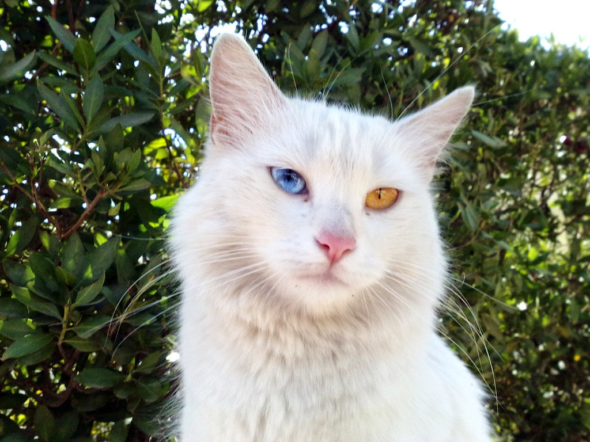

Nombre: macuin
meses: 5
sexo: macho
raza: terranova
color: blanco
padece alguna emfermedad?: No
descripcion corta: Es muy jugueton, le gusta estar en espacios abiertos, come mucho
ADOPTAR

Nombre: Rodolfo
meses: 8
sexo: macho
raza: pastor aleman
color: cafe
padece alguna emfermedad?: No
descripcion corta: Es muy jugueton, le gusta los niños, proctector
ADOPTAR

Nombre: Max
meses: 12
sexo: macho
raza: Lobo siveriano
color: Gris con blanco
padece alguna emfermedad?: No
descripcion corta: Es muy jugueton, le gusta mucho sus juguetes, le gusta estar con otros perros.
ADOPTAR

Nombre: Dona
meses: 17
sexo: Hembra
raza: Boston terrier
color: Negro con blanco
padece alguna emfermedad?: No
descripcion corta: Tranquila, dormilona.
ADOPTAR

Nombre: Coral
meses: 13
sexo: Hembra
raza: Azul Ruso
color: Gris
padece alguna emfermedad?: No
descripcion corta: le gusta cazar ratones y dormir en las tardes.
ADOPTAR

Nombre: Garfiel
meses: 19
sexo: macho
raza: gato himalayo
color: Blanco
padece alguna emfermedad?: No
descripcion corta: le gusta asechar pajaros, muy aseado.
ADOPTAR

Nombre: Pacho
meses: 20
sexo: macho
raza: Ragdoll
color: Blanco
padece alguna emfermedad?: No
descripcion corta: Le gusta que lo acaricien y es muy amigable.
ADOPTAR

Nombre: Matilde
meses: 5
sexo: Hembra
raza: Van turco
color: Blanco con cafe
padece alguna emfermedad?: No
descripcion corta: Pelea con los demas gatos, le gusta estar sola.
ADOPTAR